Presencia
Estar es nuestro principal aporte. Escuchar, mirar, preguntar el nombre. La presencia constante construye un vínculo que, con el tiempo, se vuelve cuidado.

Un grupo de personas comunes eligiendo el mismo domingo, semana tras semana.
Desde 2009, Domingos de Rayuela acompaña a niñas y adolescentes del Hogar Santa Rita a través de actividades recreativas, educativas y culturales. Cada encuentro busca abrir un espacio de contención, juego, escucha y alegría dentro de una etapa sensible de sus vidas.
Somos un grupo independiente, autogestionado y sin vinculación partidaria, integrado por jóvenes estudiantes, profesionales y trabajadores de distintas áreas. Actualmente nos encontramos en proceso de concretar nuestra personería jurídica. Todas nuestras actividades se sostienen con recursos propios y con el apoyo solidario de personas que colaboran con la causa.
El Hogar Santa Rita alberga a niñas de entre 6 y 12 años que, por disposición de organismos de protección de derechos o del Poder Judicial, se encuentran temporalmente separadas de sus núcleos familiares para resguardar su bienestar y protección.
En ese contexto, compartimos domingos de juego, meriendas, celebraciones y propuestas pensadas para acompañar desde la presencia. Festejamos cumpleaños, Día de las Infancias, Navidad y Reyes, y también organizamos actividades lúdicas, educativas y culturales.
En cada visita buscamos promover la amistad, la solidaridad, el compañerismo y el respeto por los vínculos, construyendo momentos cotidianos que puedan dejar una huella positiva durante su paso por el hogar.
No hace falta hacer cosas grandes para cambiar un domingo. Estos son los tres acuerdos invisibles que nos guían cada semana.
Estar es nuestro principal aporte. Escuchar, mirar, preguntar el nombre. La presencia constante construye un vínculo que, con el tiempo, se vuelve cuidado.
Jugar es serio. Es donde aparecen la risa, la confianza y los recuerdos que después quedan. Por eso pensamos cada domingo desde ahí: el juego primero.
No vamos un domingo: vamos todos los domingos. Esa continuidad es lo que sostiene el lazo, y es también el compromiso que nos pedimos entre nosotras.
Somos personas con profesiones, historias y agendas distintas, eligiendo el mismo domingo. Ellas y ellos son parte del equipo que hace posible cada encuentro.
Trabajadora social
7 años en el voluntariadoDiseñadora UX
5 años en el voluntariadoMaestra jardinera
6 años en el voluntariadoPsicopedagoga
4 años en el voluntariadoEstudiante de Psicología
2 años en el voluntariadoComunicadora social
3 años en el voluntariadoProfesora de música
5 años en el voluntariadoMédica pediatra
6 años en el voluntariadoAbogada
1 año en el voluntariadoProfesora de Educación Física
4 años en el voluntariadoDiseñadora gráfica
3 años en el voluntariadoEstudiante de Trabajo Social
2 años en el voluntariado